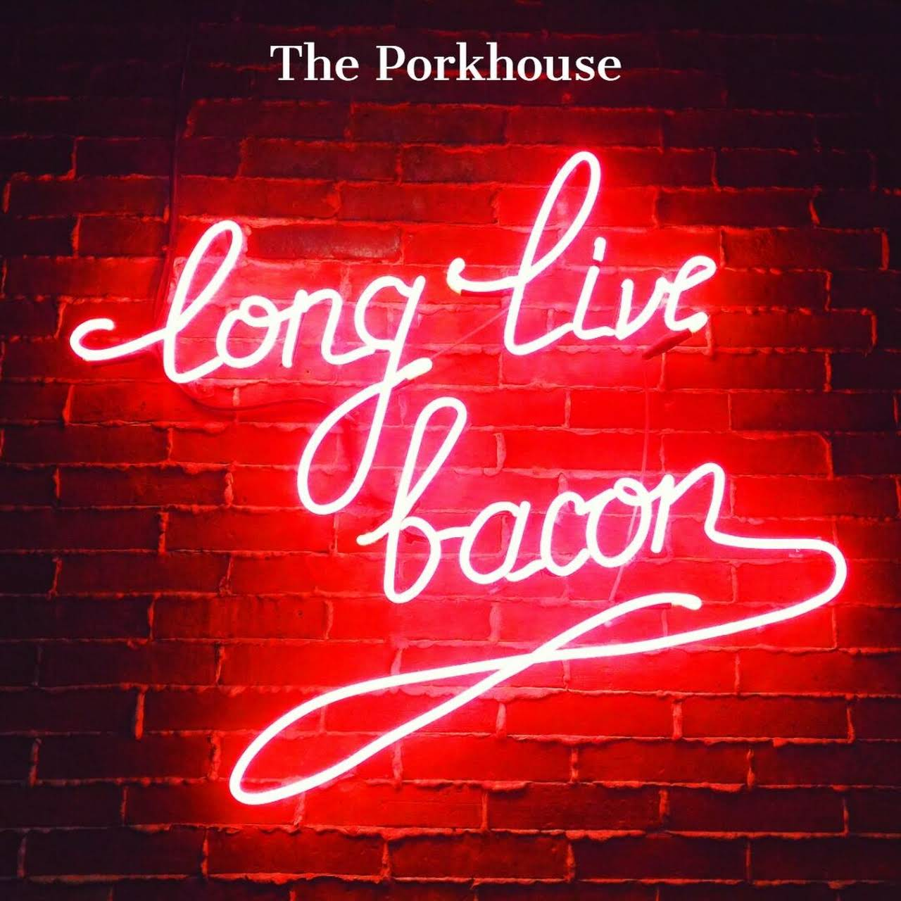
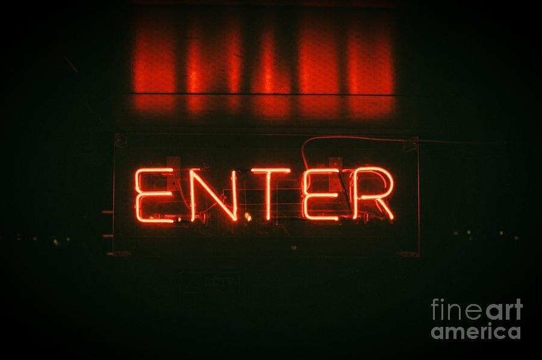
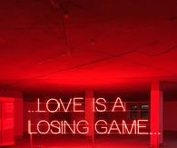
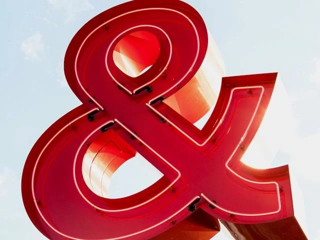
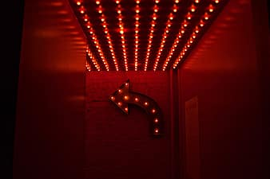
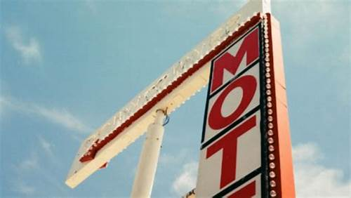

aboutMe myWork contact
i saw the sign
and it opened up my eyes. One of my favorite things to do is to capturethe american nostalgia of signage. They tell us where we’re going or where we’ve been. They express a mood or saying can even just be a shape. But it’s the vintage, neon, and big light bulbed signs that say so much more. They aren’t just your average square shapes with letters on it. Some actual thought and planning went into the making of the sign. Oh and the lost are of advertising with nneon signsthat display motion is always a fun find! Such a lost art in my opinion. LED just hurts my eyes...doesn’t it?


Neon on brick
Neon on brick

Classic enter sign
Classic enter sign

LOVE IS A LOSING GAME
LOVE IS A LOSING GAME

Message in garage
Message in garage

& your point
& your point

Which way?
Which way?